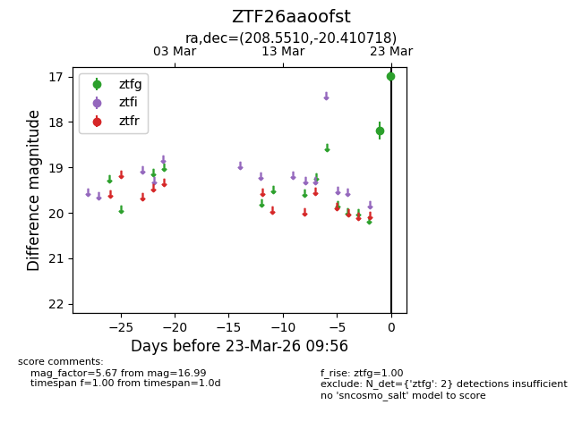
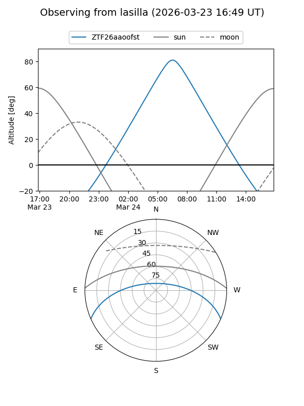
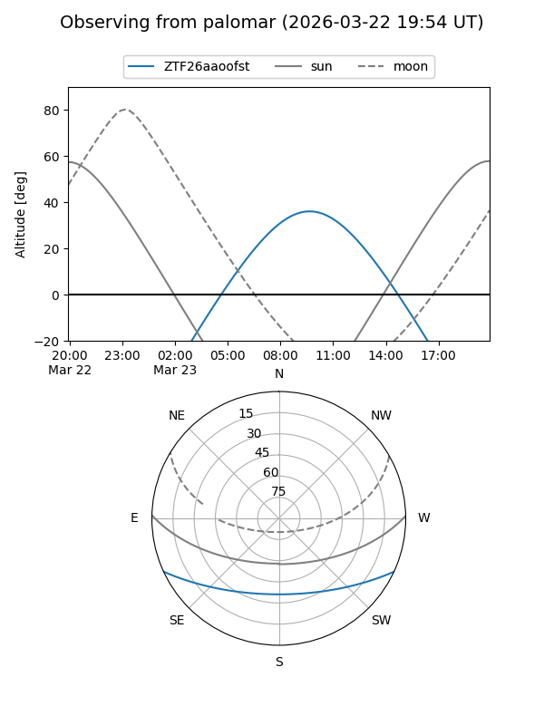

ZTF26aaoofst
Target ZTF26aaoofst at 2026-03-23 09:58
Aliases and brokers:
FINK: link
Lasair: link
ALeRCE: link
alt names
ZTF26aaoofst (ztf,fink_ztf)
Coordinates:
equatorial (ra, dec) = 208.5510,-20.41072
equatorial (HMS+DMS) = 13:54:12.25,-20:24:38.58
galactic (l, b) = (322.2817,+40.09093)
Flags:
Photometry:
last ztfg=16.99
2 ztfg detections
Lightcurve

Visibility


Additional plots